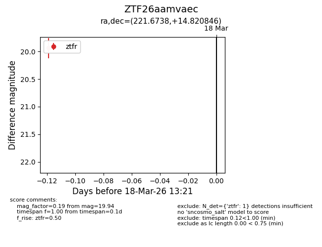
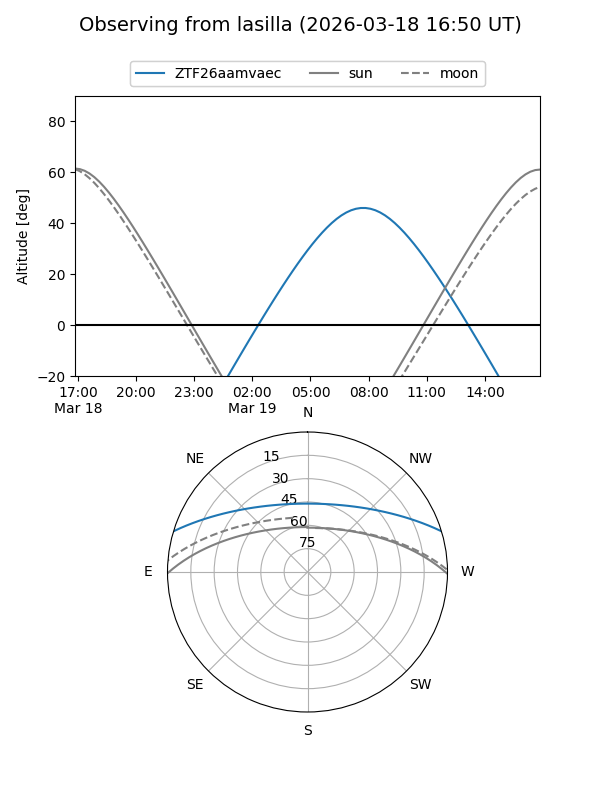
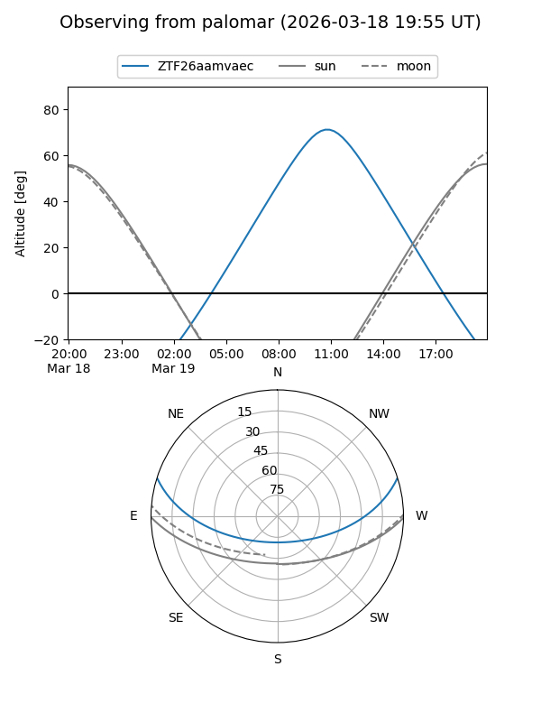

ZTF26aamvaec
Target ZTF26aamvaec at 2026-03-18 13:23
Aliases and brokers:
FINK: link
Lasair: link
ALeRCE: link
alt names
ZTF26aamvaec (ztf,fink_ztf)
Coordinates:
equatorial (ra, dec) = 221.6738,+14.82085
equatorial (HMS+DMS) = 14:46:41.72,+14:49:15.05
galactic (l, b) = (14.1364,+60.51575)
Flags:
Photometry:
last ztfr=19.94
1 ztfr detections
Lightcurve

Visibility


Additional plots